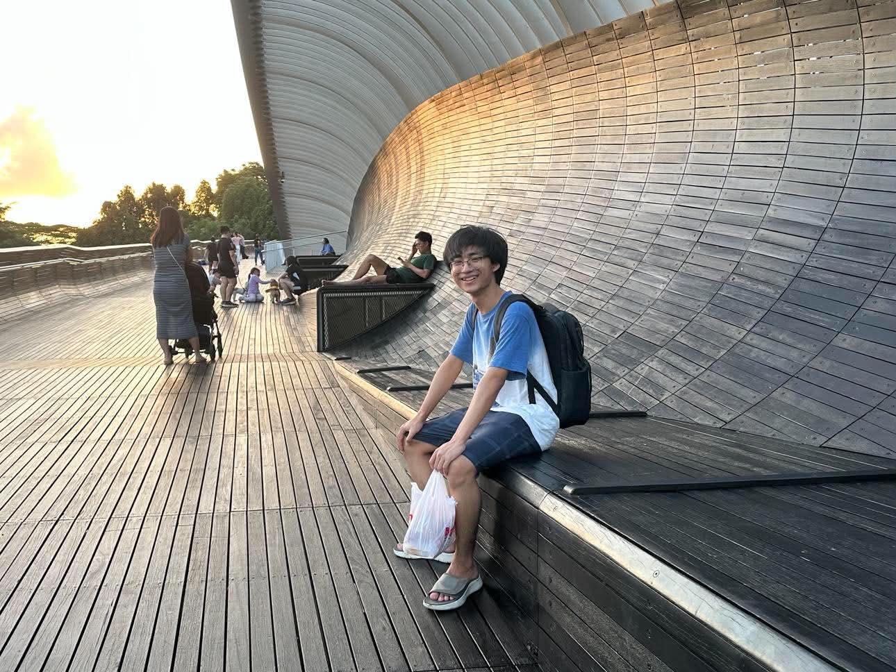

Kaung Mon (Johnathan) Thar
Computer Science @ Rose-Hulman
Hi there! I'm a Computer Science student with a flair for the tiny
joys in life. Whether it’s the daily Wordle or a git push on a
project, these tiny yet impactful moments are what I look forward to
each day, and I hope to continue contributing to the technology that
powers our everyday lives in a seemingly microscopic yet impactful
way!
What are your own trivial yet jovial joys?
